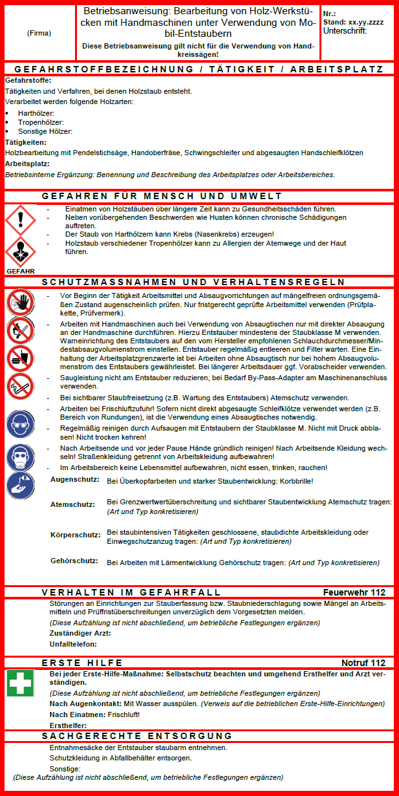

Diese Betriebsanweisung ist beispielhaft und an die jeweiligen Betriebsbedingungen anzupassen. Sie berücksichtigt nicht die Brand- und Explosionsgefährdungen durch Holzstaub, da diese nicht im Anwendungsbereich dieser TRGS liegen (siehe Abschnitt 1 Absatz 3).

Die nachfolgend aufgeführten Beschäftigten sind anhand der Betriebsanweisung über auftretende Gefährdungen und entsprechende Schutzmaßnahmen mündlich unterwiesen worden.
Gegenstand der Unterweisung waren Informationen
| – | über Hygienevorschriften, |
| – | über Maßnahmen zur Minimierung einer Holzstaubexposition, |
| – | zum Tragen und Benutzen von Schutzausrüstungen und Schutzkleidung sowie eine arbeitsmedizinisch-toxikologische Beratung. |
§ 14 Gefahrstoffverordnung § 4 DGUV Vorschrift 1 "Grundsätze der Prävention"
Über die Betriebsanweisung(en) bin ich unterrichtet worden (mindestens jährlich):
| Nr. | Name, Vorname | Datum | Unterweisung bestätigt |
Unterweisung durchgeführt von: .............................................